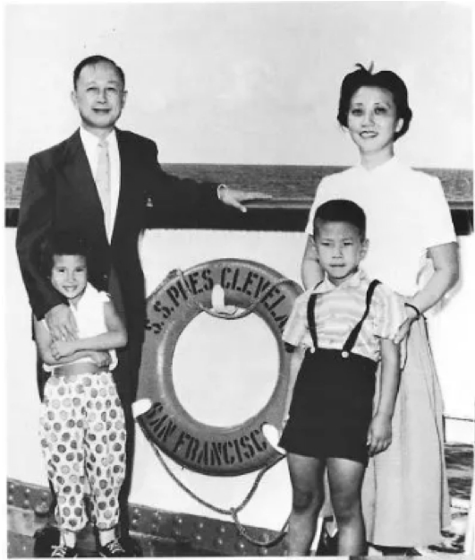

百年瞬间丨钱学森与两弹一星
1955年9月17日，当时已经名满美国的火箭专家、空气动力学家钱学森携妻子蒋英和一双年幼的儿女，登上“克利夫兰总统号”轮船，从洛杉矶踏上返回祖国的路途。临行前，他动情地对美国报界发表讲话说，他要竭尽全力，让自己的同胞过上有尊严和幸福的生活。刚刚回国的钱学森到哈尔滨军事工程学院参观，时任院长陈赓大将问：“中国人能不能搞导弹？”钱学森的回答掷地有声。
钱学森与家人在“克里夫兰总统号”船上的合影
钱学森：我那个时候正憋着一肚子气，中国人怎么不行？我说外国人能搞的，难道中国人不能搞？陈赓大将听了以后非常高兴，说好极了，我就要你这句话。
1956年初，钱学森正式向中共中央、国务院提出《建立我国国防航空工业的意见书》。此后，在他的努力带领下，1964年10月16日，中国第一颗原子弹爆炸成功，1967年6月17日，中国第一颗氢弹空爆试验成功，1970年4月24日中国第一颗人造卫星发射成功。
作为新中国“两弹一星”的功勋人物，钱学森一生获奖无数，但他说，在诸多荣誉中，最令他激动的是“优秀共产党员”的称号。1991年，当钱学森得知自己当选为“建国以来在群众中享有崇高威望的共产党员优秀代表”，并与雷锋、焦裕禄、王进喜和史来贺的名字并列在一起时，他激动万分。
钱学森：我简直心情激动极了，现在我是劳动人民的一份子了。而且我跟劳动人民最先进的份子连在一起了，我激动得不得了。
"两弹”结合首次试验成功后，聂荣臻和钱学森等人合影留念
五年归国路，十年两弹成。有人说，由于钱学森的回国效力，中国导弹、原子弹的发射至少向前推进了20年。2007年，钱学森被评为感动中国十大人物时，评委们给出的颁奖词是：在他心里，国为重，家为轻，科学最重，名利最轻。
来源：央视新闻
返回